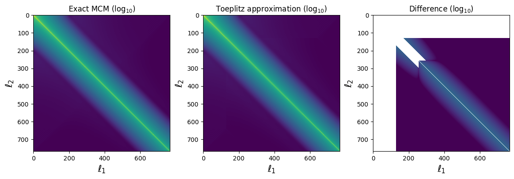
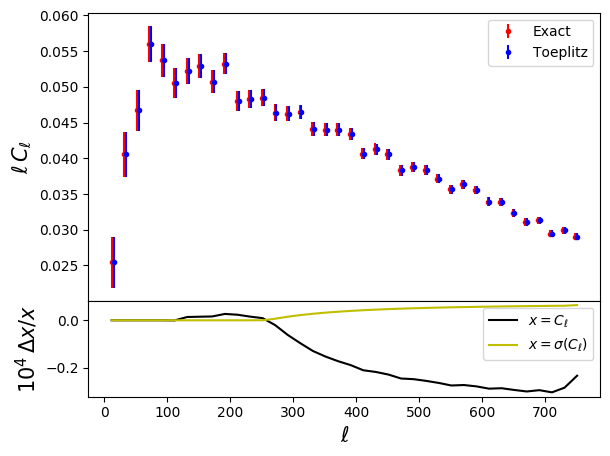

Example 10: The Toeplitz approximation¶
This sample script shows how to compute mode-coupling coefficients fast using the Toeplitz approximation of Louis et al. 2020
import numpy as np
import healpy as hp
import matplotlib.pyplot as plt
import pymaster as nmt
# This script showcases the use of the Toeplitz approoximation of
# Louis et al. 2020 (arXiv:2010.14344) to speed up the calculation of
# mode-coupling matrices.
# As in other examples, we start by creating a field and a
# binning scheme
nside = 256
ls = np.arange(3*nside)
mask = nmt.mask_apodization(hp.read_map("mask.fits", verbose=False),
1., apotype="Smooth")
cl_theory = (ls+50.)**(-1.5)
mp_t = hp.synfast(cl_theory, nside, verbose=False)
f0 = nmt.NmtField(mask, [mp_t])
b = nmt.NmtBin.from_nside_linear(nside, 20)
leff = b.get_effective_ells()
# First, let's compute the mode-coupling matrix and the mode-coupling
# matrix exactly.
we = nmt.NmtWorkspace()
we.compute_coupling_matrix(f0, f0, b)
c_exact = we.get_coupling_matrix() / (2 * ls[None, :]+1.)
cl_exact = we.decouple_cell(nmt.compute_coupled_cell(f0, f0))
# Now, let's use the Toeplitz approximation. Note that the choices
# of l_toeplitz, l_exact and dl_band are arbitrary, and should not
# be understood as a rule of thumb.
wt = nmt.NmtWorkspace()
wt.compute_coupling_matrix(f0, f0, b, l_toeplitz=nside,
l_exact=nside//2, dl_band=40)
c_tpltz = wt.get_coupling_matrix() / (2 * ls[None, :]+1.)
cl_tpltz = wt.decouple_cell(nmt.compute_coupled_cell(f0, f0))
# You can also use the Toeplitz approximation to compute the
# Gaussian covariance matrix. Let's try that here:
# First, the exact calculation
cwe = nmt.NmtCovarianceWorkspace()
cwe.compute_coupling_coefficients(f0, f0)
cov_exact = nmt.gaussian_covariance(cwe, 0, 0, 0, 0,
[cl_theory], [cl_theory],
[cl_theory], [cl_theory],
we)
# Now using the Toeplitz approximation:
cwt = nmt.NmtCovarianceWorkspace()
cwt.compute_coupling_coefficients(f0, f0, l_toeplitz=nside,
l_exact=nside//2, dl_band=40)
cov_tpltz = nmt.gaussian_covariance(cwt, 0, 0, 0, 0,
[cl_theory], [cl_theory],
[cl_theory], [cl_theory],
wt)
# Let's compare the mode-coupling matrices themselves:
fig, (ax1, ax2, ax3) = plt.subplots(ncols=3, figsize=(14, 4))
ax1.set_title(r'Exact MCM ($\log_{10}$)')
ax1.imshow(np.log10(np.fabs(c_exact)), vmax=-1, vmin=-14)
ax1.set_xlabel(r'$\ell_1$', fontsize=15)
ax1.set_ylabel(r'$\ell_2$', fontsize=15)
ax2.set_title(r'Toeplitz approximation ($\log_{10}$)')
ax2.imshow(np.log10(np.fabs(c_tpltz)), vmax=-1, vmin=-14)
ax2.set_xlabel(r'$\ell_1$', fontsize=15)
ax2.set_ylabel(r'$\ell_2$', fontsize=15)
ax3.set_title(r'Difference ($\log_{10}$)')
ax3.imshow(np.log10(np.fabs(c_tpltz-c_exact)),
vmax=-1, vmin=-14)
ax3.set_xlabel(r'$\ell_1$', fontsize=15)
ax3.set_ylabel(r'$\ell_2$', fontsize=15)
# And now the power spectra
fig = plt.figure()
ax1 = fig.add_axes((.1, .3, .8, .6))
ax1.errorbar(leff, leff*cl_exact[0],
yerr=leff*np.sqrt(np.diag(cov_exact)),
fmt='r.', label='Exact')
ax1.errorbar(leff+3, leff*cl_tpltz[0],
yerr=leff*np.sqrt(np.diag(cov_tpltz)),
fmt='b.', label='Toeplitz')
ax1.set_ylabel(r'$\ell\,C_\ell$', fontsize=15)
ax1.legend()
ax2 = fig.add_axes((.1, .1, .8, .2))
ax2.plot(leff, 1E4*(cl_tpltz[0]/cl_exact[0]-1), 'k-',
label=r'$x=C_\ell$')
ax2.plot(leff,
1E4*(np.sqrt(np.diag(cov_exact)/np.diag(cov_tpltz))-1),
'y-', label=r'$x=\sigma(C_\ell)$')
ax2.set_xlabel(r'$\ell$', fontsize=15)
ax2.set_ylabel(r'$10^4\,\Delta x/x$', fontsize=15)
ax2.legend()
plt.show()
The result of running this is:
 {kind=link}
{kind=link}